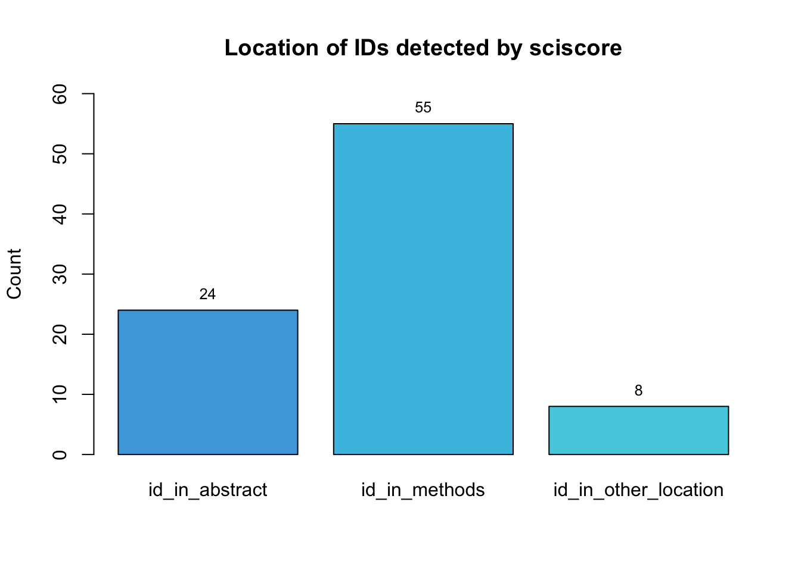

#load dataset
data <- read_csv(here("testing", "regset.csv"))
#general overview
table(data$id_type_group)
false_positive protocol trn
29 2 169 This document presents the descriptive results from the analysis of 4 different tools (sciscore, trialidentifier, ctregistries and nct). The aim of these tools is to screen papers for one or more registration IDs (protocol, trial registry, etc).
Overall, 200 IDs found in 117 papers were analyzed.
Types of ID detected
Where were the IDs located (abstract section, methods section, etc.)?
Were the papers research articles?
Did the tools agree/disagree? (i.e. they all found the ID = agree).
Did the tools find an actual ID?
Additional observations
#load dataset
data <- read_csv(here("testing", "regset.csv"))
#general overview
table(data$id_type_group)
false_positive protocol trn
29 2 169 The three main groups of ID observed were trial registration numbers (trn), protocols, and false positives.
trn <- subset(data, data$id_type %in% c("ctgov", "umin", "drks", "irct", "chictr",
"isrctn","ctri", "eudract", "actrn", "jrct",
"kct", "ntr", "pactr"))
table(trn$id_type)
actrn chictr ctgov ctri drks eudract irct isrctn jrct kct
1 3 137 2 5 2 5 3 1 1
ntr pactr umin
1 1 7 The majority of the trial registry numbers were from the ctgov registry, followed by umin, dkrs and irct.

note on the names:
ctgov - US Clinical Trials Register
umin - University Hospital Medical Information Network Register
drks - German Clinical Trials Register
irct - Iranian Registry of Cinical Trials
chictr - Chinese Clinical Trial Registry
isrctn - ISRCTN Registry
ctri - Clinical Trials Registry-India
eudract - EU Clinical Trials Register
actrn - Australian New Zealand Clinical Trial Registry
jrct - Japan Registry of Clinical Trials
kct - Korean Clinical Trial Registry
ntr - Dutch Trial Register
pactr - Pan African Clinical Trials Registry
protocol <- subset(data, data$id_type %in% c("protocols_io"))
table(protocol$id_type)
protocols_io
2 We only had two IDs that were included in links to specific protocols from protocols.io

false_positive <- subset(data, data$id_type %in% c("catalogue_id", "datapoint",
"drug_id", "funding_id",
"medical_acronym",
"medical_device"))
table(false_positive$id_type)
catalogue_id datapoint drug_id funding_id medical_acronym
3 5 6 13 1
medical_device
1 The main types of false positives we encounter were IDs corresponding to specific fundings or grants.


What were the other locations? - discussion (53 cases), introduction (24 cases), acknowledgements (16 cases ), results (11 cases), etc.

The IDs analyzed could be in one or more locations, that is why there are more cases out of a total of 200 IDs. This is important to remember for a following section that analyze the location of the ID by tool.
table(data$paper_is_research_article)
FALSE TRUE
41 159 Here we evaluated if the papers had the structure of a research article (abstract, introduction, methods, results, discussion, etc.). Overall, the majority of the papers were research articles.
It is important to note that 33 of the False cases came from the same paper, which reviewed different studies and identified them using their ctgov trial registry number.
table(data$tools_agree)
no yes
146 54 Overall, the tools agreed in 54 cases, and disagreed in 146. Additionally, they only agreed when the ID was a trn:
table(data$tools_agree, data$id_type_group)
false_positive protocol trn
no 29 2 115
yes 0 0 54#subset of sciscore_hit = TRUE
sciscore <- subset(data, data$sciscore_hit %in% c("TRUE"))
table(sciscore$id_type_group)
protocol trn
2 55 table(sciscore$id_type)
ctgov eudract protocols_io
54 1 2 sciscore detected 55 trial registry number IDs and 2 protocol IDs. The trn were from ctgov and eudract.
Additionally, sciscore detected the IDs in more than 2 locations: abstract (24 cases), methods (53) and other location (9).

#subset of trialidentifier_hit = TRUE
trialidentifier <- subset(data, data$trialidentifier_hit %in% c("TRUE"))
table(trialidentifier$id_type_group)
trn
139 table(trialidentifier$id_type)
ctgov isrctn
136 3 trialidentifier identified 139 trial registry number IDs, from both ctgov and isrctn.
Additionally, trialidentifier detected the IDs in more than 2 locations: abstract (35 cases), methods (63) and other location (81).

#subset of ctregistries_hit = TRUE
ctregistries <- subset(data, data$ctregistries_hit %in% c("TRUE"))
table(ctregistries$id_type_group)
false_positive trn
29 166 Out of the 4 tools, ctregistries was the one who selected the 29 cases of false positives. However, it also detected 166 trial registry number IDs.
Finally, ctregistries detected the IDs in more than 2 locations: abstract (43 cases), methods (89), other location (113).

#subset of nct_hit = TRUE
nct <- subset(data, data$nct_hit %in% c("TRUE"))
table(nct$id_type_group)
trn
137 table(nct$id_type)
ctgov
137 nct identified 137 trial registry number IDs, all from ctgov.
Additionally, nct detected the IDs in more than 3 locations: abstract (34 cases), methods (61), other location (81).
Some papers analyzed use specifically the ctgov trial registry number as a way to cite other studies in their introduction or discussion. Around 71 of the ctgov trn’s were used as references. In this case, the tools correctly identify a trial ID number, but is this what we want to find? or are we interested in finding if authors put in their papers their own registry ID?
Sometimes they were detected as IDs, but not in all cases. If it is a point of interest, one could analyze them and find if there are differences in the way the number was mentioned.
There were two cases of ctgov IDs reported with one digit less, but the tools were still able to identify them.
Overall, out of the 50 papers reviewed, there where only three papers flagged for a possible registration number:
Number ID found for the Institutional Animal Care and Use Committee (IACUC) - this could be a protocol ID.
Number ID from www.researchregistry.com.
Number ID for Prospero Registry.
Additionally, there were some funding IDs observed in 6 cases that were detected by the tools in other papers (and labeled as false_positives), but not on these controls.
There were also some Ethical ID numbers present in 7 cases. These types of ID were not detected by the tools, but one could question if those are considered as a form of registration or not.